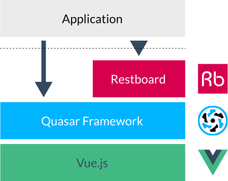
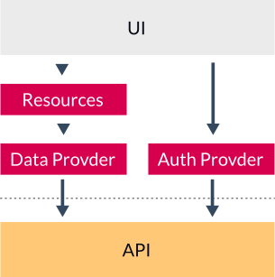
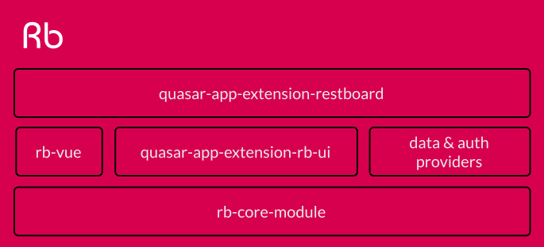

Technically speaking, Restboard is a plug & play extension for Quasar, a rich and full-featured frontend framework based on Vue.js:

Restboard provides the following buildig blocks:
Restboard provides a couple of abstractions to interact with the underlying backend API in a standard way.
The interaction pattern is designed around the concept of Resources and Providers:

Restboard is composed by several packages. By default, the standard installation includes and wires all of them together.
However, if you want to use just part of the ecosystem, you are free to add to your project just the features you need!

No, not really. While Restboard is primarly designed to interact with REST APIs, it doesn't force you to any particular paradigm.
In other words, if you need to integrate a GraphQL API you just need to use a proper data provider.
You can also combine different APIs for different resources, simply using different data providers: it's really up to you!